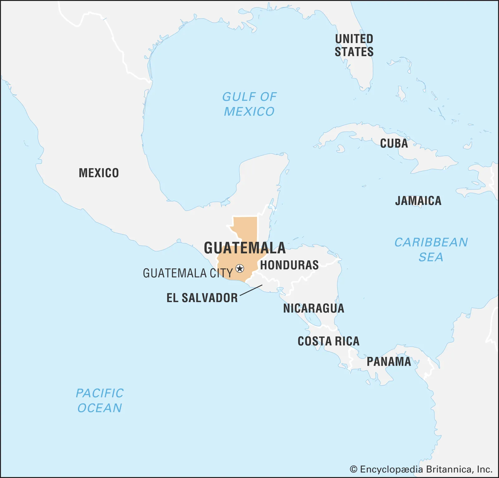
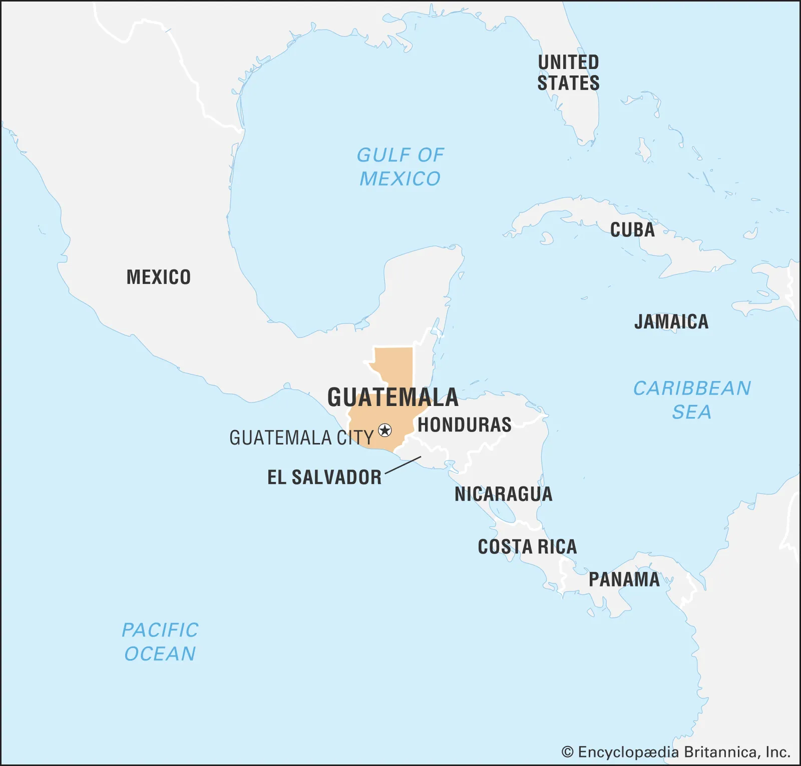
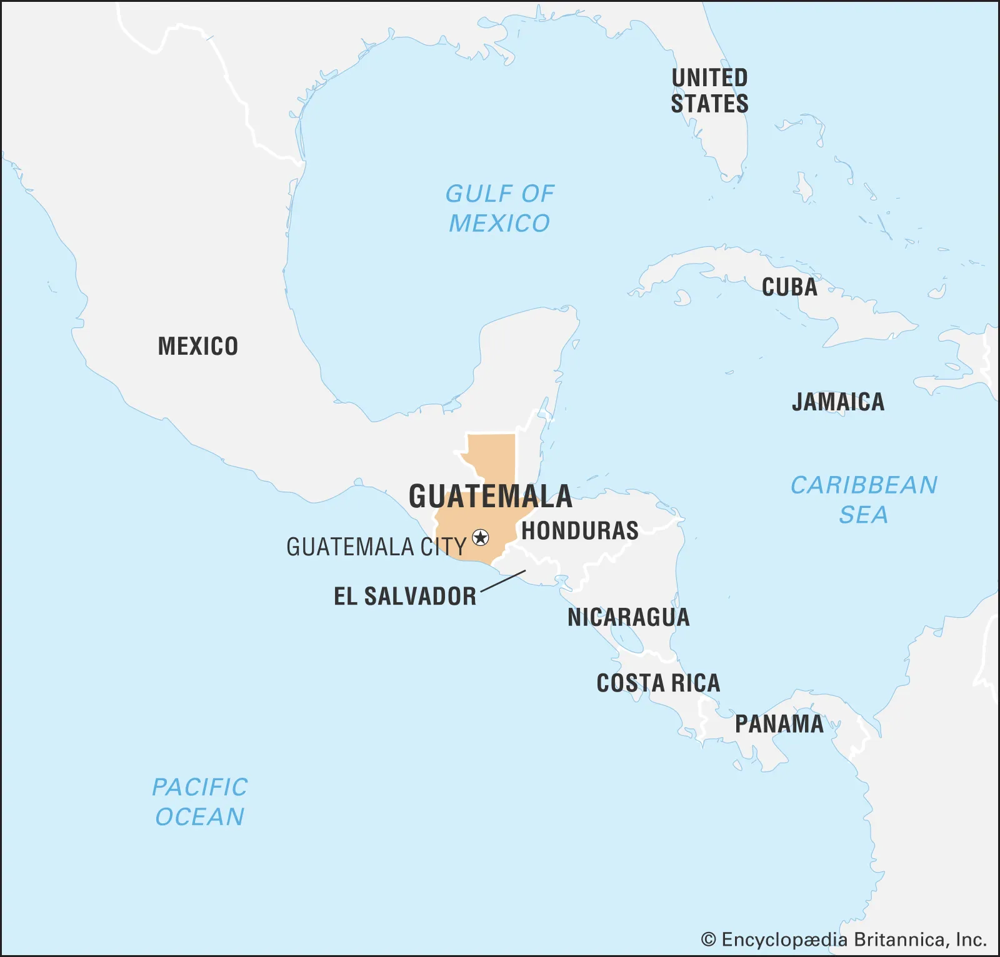
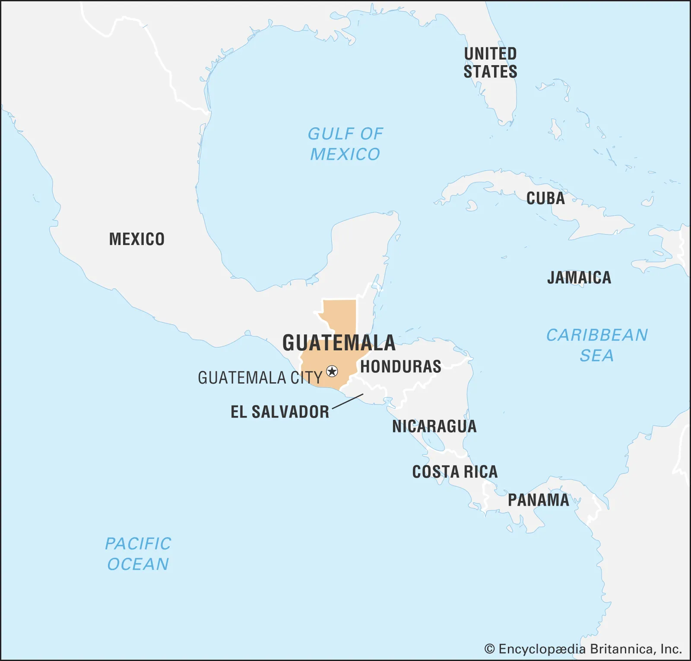

Antigua is a small city in southern Guatemala that is surrounded by volcanoes. It is reknowned for its Spanish colonial buildings. Some of the buildings have been rebuilt since an earthquake occured in 1773 ending the Spanish colonial reign of Antigua being Guatemala's colonial capital. Now the Guatemala's capital is Guatemala City but it doesn't stop tourists from visiting this historic city any less.
The arrival of the Spaniards in Guatemala began in 1524 with the conquest of the Guatemalan Highlands and neighbouring Pacific plain under the command of Pedro de Alvarado. After the conquest and the colonial era, more people came to the country not as conquerors, but to do business or daily activities.
Resources
Hotel Information Activities Culture Currency About Me